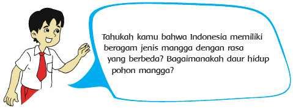
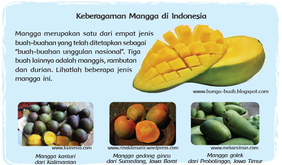
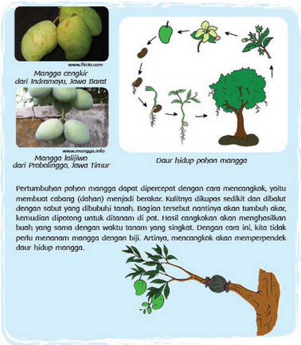

Pembelajaran 2
Activity

Siti berencana mengadakan acara makan rujak bersama teman-teman di dekat rumahnya.
Pada hari Minggu, ia ikut pergi ke pasar bersama ibu untuk membeli mangga, mentimun,
jambu air, dan beberapa buah lainnya. Betapa takjubnya Siti melihat keberagaman mangga
di pasar itu. Berikut ini beberapa di antaranya.


Diskusikan pertanyaan-pertanyaan berikut dengan kelompokmu!
• Apa manfaat yang kita dapatkan dari keberagaman buah mangga yang dimiliki
negeri kita?
• Berdasarkan informasi tadi, apa yang dilakukan manusia terhadap daur hidup
mangga?
• Bagaimana akibat yang ditimbulkannya?
• Apakah menurutmu cara itu baik? Mengapa?
Sampaikan hasil diskusi kelompokmu dengan kelompok lain.